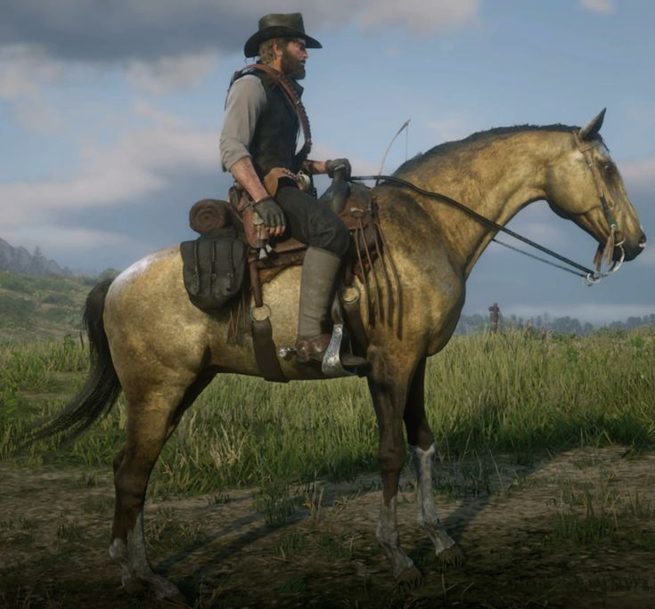

Top 5 Fastest Horses in Red Dead Redemption 2

Speed: 6 → 9 (with upgrades)
Location: Lake Isabella (snowy mountains, West Grizzlies)

Speed: 6 → 9
Location: Saint Denis Stable

Speed: 6 → 9
Location: Blackwater Stable (after Chapter 6)

Speed: 7
Location: Scarlett Meadows or Blackwater Stable

Speed: 6
Location: Blackwater or Saint Denis Stable